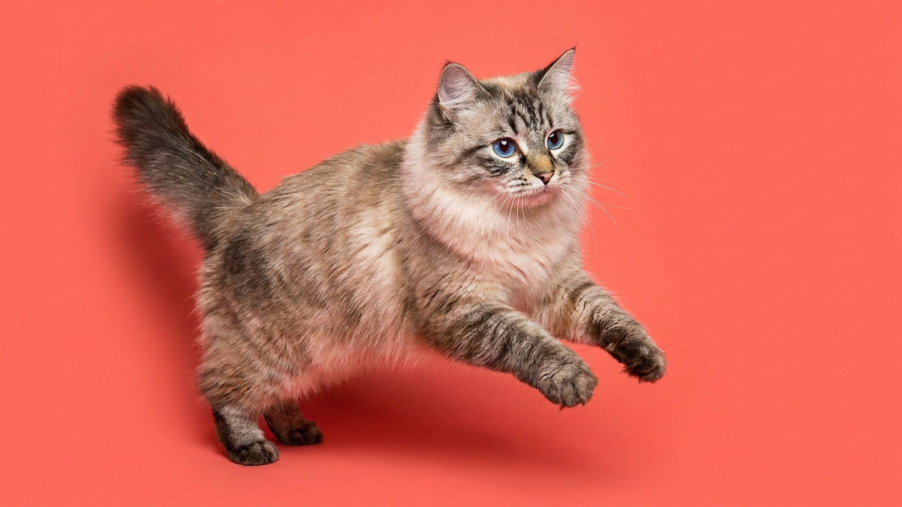

Невская маскарадная реагирует на своё имя, отвечает на вопросы голосом и встречает хозяина у двери — как собака. За красивой колор-пойнт маской скрывается кошка с очень конкретным характером: привязчивая, умная и требовательная к общению. Но пышная шерсть с плотным подшёрстком — это отдельная история, к которой лучше быть готовым заранее.
🐾 Первая помощь — всегда под рукой
AnimaLife подскажет, что делать в тревожной ситуации с питомцем ещё до визита к врачу. Откройте в один тап.
Невская маскарадная кошка — не тот питомец, который живёт сам по себе. Она выбирает одного или двух «своих» людей и держится рядом: ходит следом по квартире, устраивается на коленях, участвует в делах. При этом порода легко ладит с детьми — терпелива, не агрессивна в игре, умеет уйти, если устала. С другими животными, как правило, уживается без конфликтов.
Голос у невской маскарадной мягкий, но разговорчивость — заметная. Кошка комментирует происходящее, просит внимания, отвечает на обращение. Если её долго игнорировать, она повторит запрос настойчивее. Порода плохо переносит одиночество: если хозяин часто отсутствует больше 8–10 часов, лучше завести питомцу компанию — другую кошку или активную собаку.
Шерсть невской маскарадной длинная, полуприлегающая, с плотным водоотталкивающим подшёрстком. Она менее склонна к колтунам, чем у персов, но без регулярного расчёсывания всё равно сваливается — особенно в области шеи, подмышек и паха.
Невская маскарадная линяет заметно весной и осенью. В эти периоды вычёсывание увеличивают до ежедневного, а выпавшая шерсть собирается клубками по углам — это норма для породы, а не признак проблемы. Специальный резиновый ролик или перчатка для груминга ускоряет сбор шерсти с мягкой мебели.
Если между линьками кошка теряет шерсть клочьями, кожа выглядит раздражённой или появляются залысины — это повод для визита к ветеринару, а не сезонная норма для породы.
Невская маскарадная — крупная порода: коты весят 6–8 кг, кошки 4–6 кг. Это важно учитывать при выборе мебели и аксессуаров.
🐾 Экономьте на лишних визитах к врачу
Сначала спросите AI-ветеринара в AnimaLife — часто этого достаточно, чтобы понять, нужен ли визит к врачу.
🐾 Понравился разбор?
Подпишитесь на канал — каждый день разбираем по одному тревожному симптому у кошек и собак: что в пределах нормы, а когда пора к врачу. Подпишитесь, чтобы не пропустить разбор, который может спасти здоровье вашего питомца.
Материал носит информационный характер и не заменяет очную консультацию ветеринара.